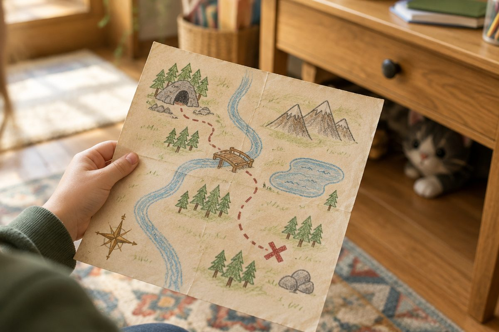

'화장실이 어디예요?'는 일본어로 어떻게 물을까?

일본 여행 중 화장실이 급해졌어요! 이럴 때 "화장실이 어디예요?"라고 물을 수 있다면 정말 든든하겠죠? 오늘은 장소를 묻는 どこ와 위치를 말하는 법을 배워요.
ここ・そこ・あそこ・どこ
앞에서 배운 これ・それ・あれ・どれ 기억나요? 장소를 말할 때는 ここ(koko, 코코) '여기', そこ(soko, 소코) '거기', あそこ(asoko, 아소코) '저기', どこ(doko, 도코) '어디'를 써요.
こ・そ・あ・ど 규칙은 똑같아요. 저기만 あこ가 아니라 あそこ라는 것을 조심해요.
ここ(여기) · そこ(거기) · あそこ(저기) · どこ(어디)
~は どこですか? ~은 어디예요?
'○○은 어디예요?'는 ○○は どこですか(wa doko desu ka, 와 도코데스카)라고 해요.
길을 물을 때는 먼저 すみません(스미마센) '실례합니다'라고 말을 걸면 예의 바르게 들려요.
すみません、トイレは どこですか。(sumimasen, toire wa doko desu ka, 스미마센 토이레와 도코데스카) → 실례합니다, 화장실은 어디예요?
장소 이름을 알아봐요
トイレ(toire, 토이레) 화장실, えき(eki, 에키) 역, がっこう(gakkou, 각코-) 학교, コンビニ(konbini, 콤비니) 편의점, こうえん(kouen, 코-엔) 공원, びょういん(byouin, 뵤-인) 병원
びょういん(byouin, 뵤-인) 병원과 びよういん(biyouin, 비요-인) 미용실은 아주 비슷해요. 작은 ょ인지 큰 よ인지 잘 봐요!
えきは あそこです。(eki wa asoko desu, 에키와 아소코데스) → 역은 저기예요.
위・아래・안・옆
물건이 어디 있는지 말할 때는 ○○の うえ(no ue, 노 우에) '○○ 위', ○○の した(shita, 시타) '아래', ○○の なか(naka, 나카) '안', ○○の となり(tonari, 토나리) '옆'을 써요.
の는 '~의'라는 뜻이에요. つくえの うえ는 '책상의 위', 즉 '책상 위'예요.
A: ねこは どこですか。 B: つくえの したです。 (고양이는 어디예요? / 책상 아래예요.)
みぎ・ひだり 그리고 고맙습니다
방향은 みぎ(migi, 미기) '오른쪽', ひだり(hidari, 히다리) '왼쪽'이에요. トイレは みぎです는 '화장실은 오른쪽이에요'예요.
길을 알려 주면 ありがとうございます(arigatou gozaimasu, 아리가토- 고자이마스) '고맙습니다'라고 꼭 인사해요.
A: コンビニは どこですか。 B: ひだりです。 A: ありがとうございます。
핵심 낱말
- どこ
- 어디 (doko, 도코)
- ここ・そこ・あそこ
- 여기・거기・저기
- の
- ~의 (no, 노). つくえの うえ = 책상 위
- うえ・した・なか・となり
- 위・아래・안・옆
- みぎ・ひだり
- 오른쪽・왼쪽
꼭 알아야 할 표현
| どこですか。 | 어디예요? | doko desu ka (도코데스카) |
| トイレは どこですか。 | 화장실은 어디예요? | toire wa doko desu ka (토이레와 도코데스카) |
| えきは あそこです。 | 역은 저기예요. | eki wa asoko desu (에키와 아소코데스) |
| ここ | 여기 | koko (코코) |
| そこ | 거기 | soko (소코) |
| あそこ | 저기 | asoko (아소코) |
| つくえの うえ | 책상 위 | tsukue no ue (츠쿠에노 우에) |
| みぎ | 오른쪽 | migi (미기) |
| ひだり | 왼쪽 | hidari (히다리) |
| コンビニ | 편의점 | konbini (콤비니) |
| びょういん | 병원 | byouin (뵤-인) |
| ありがとうございます。 | 고맙습니다. | arigatou gozaimasu (아리가토- 고자이마스) |
한 줄 정리
- 장소는 ここ(여기)・そこ(거기)・あそこ(저기)・どこ(어디)로 말해요.
- '○○은 어디예요?'는 ○○は どこですか(와 도코데스카)예요.
- 위치는 ○○の うえ/した/なか/となり, 방향은 みぎ・ひだり로 말해요.
학교 교육과정 연결 (가정 학습 과정)
초등학교 정규 교육과정에는 일본어가 없어요. 처음 배우는 아이를 위한 가정 학습용 입문 단원이에요.